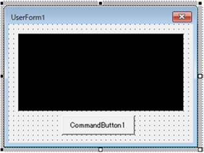
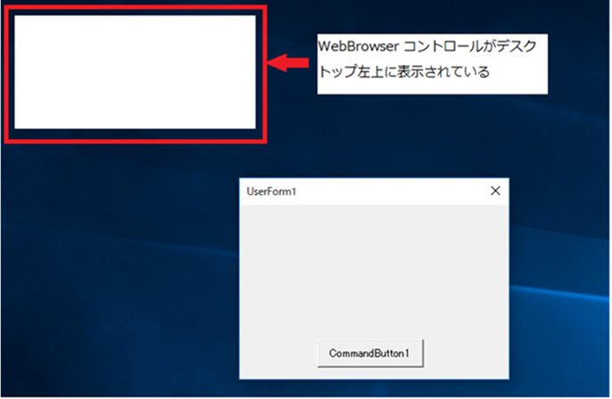
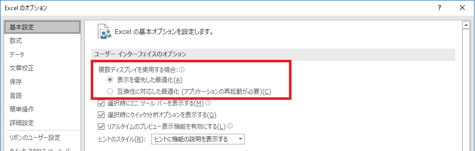

(※ 2018 年 1 月 23 日に Japan Office Developer Support Blog に公開した情報のアーカイブです。)
こんにちは、Office 開発サポート チームの中村です。
今回の記事では、ユーザーフォーム上に WebBrowser コントロールを貼り付けて利用している場合に、Windows 10 バージョン 1703 以降の OS で Office 2016 をバージョン 1801 以降に更新すると、WebBrowser コントロールがユーザーフォームの外に表示される動作について記載します。
2018/2/5 Update
本現象が発生する要因となる機能 (後述の「ディスプレイで最適な解像度を使用」) の有効化を延期しました。このため、本記事の内容は今後の更新で発生する可能性がある現象としてご案内します。現時点で、本機能の有効化時期は未定です。
2018/6/8 Update
月次チャネル バージョン 1805 (16.0.9226.2114) で本機能が有効化されました。当初公開時とオプション メニュー名などが変更されたため、記事内の画面キャプチャなどを最新の状態に更新しています。
再現手順
1. 新規 Excel ブックを作成し、Visual Basic Editor でユーザーフォーム (UserForm1) を追加して、WebBrowser コントロールとボタン コントロールを貼り付けます。

図 1. ユーザーフォームへの WebBrowser コントロール追加
2. ボタン コントロールのクリック イベント ハンドラに以下のようなコードを記述します。
1 | Private Sub CommandButton1_Click() |
3. F5 キーを押下して、ユーザーフォームを表示すると、以下のように WebBrowser コントロールがユーザーフォームのウィンドウ外に表示されます。

図 2. WebBrowser がユーザーフォーム外に表示されている状態
現象詳細
この動作は、バージョン 1801 で追加された「ディスプレイで最適な解像度を使用」という新機能の影響で発生します。
タイトル : 高解像度のモニターの office のサポート
アドレス : https://support.office.com/ja-jp/article/6720ca0e-be59-41f6-b629-1369f549279d (日本語機械翻訳版)
アドレス : https://support.office.com/en-us/article/6720ca0e-be59-41f6-b629-1369f549279d(英語版)
この機能の動作を制御するオプション項目「複数ディスプレイを使用する場合」で「表示を優先した最適化」が有効な場合に現象が発生します (更新後、既定では有効に設定されています)。

図 3. [複数ディスプレイを使用する場合] オプション
このオプションは、高解像度や複数のモニターを持つ PC 環境などでも最適な画面表示となるよう、バージョン 1801 で機能強化を行ったことで追加されました。このオプションが有効な場合、モニターの解像度を判断し、これに応じて適切な表示が行われます。
一方で、WebBrowser コントロールのように、コントロールによっては、表示の際にコントロール自身のウィンドウとユーザーフォーム ウィンドウとの親子関係の設定が行われます。このときに、ユーザーフォームとコントロールのウィンドウで、それぞれ解像度の認識状況が異なると、以下の SetParent 関数のリファレンス ページに記載の通り、Windows 10 バージョン 1703 以降の OS ではエラーが返され、親子関係を設定することができません。
タイトル : SetParent function
アドレス : https://msdn.microsoft.com/en-us/library/windows/desktop/ms633541(v=vs.85).aspx
<公開情報より抜粋>
Unexpected behavior or errors may occur if hWndNewParent and hWndChild are running in different DPI awareness modes. The table below outlines this behavior:
| Operation | Windows 8.1 | Windows 10 (1607 and earlier) | Windows 10 (1703 and later) |
|---|---|---|---|
| SetParent (In-Proc) | N/A | Forced reset (of current process) | Fail (ERROR_INVALID_STATE) |
| SetParent (Cross-Proc) | Forced reset (of child window’s process) | Forced reset (of child window’s process) | Forced reset (of child window’s process) |
これらの動作の結果、WebBrowser コントロールとユーザーフォームの親子関係が設定されず、WebBrowser コントロールがユーザーフォームとは別に表示されます。
WebBrowser コントロールに限らず、同じようにウィンドウを持つコントロールでは、同様に現象が発生する場合があります。(MSCOMCTL.OCX に含まれる TreeView コントロールなどのように、ウィンドウを持つコントロールでも現象が発生しないコントロールもあります。)
補足
- 「ディスプレイで最適な解像度を使用」機能は、Excel / Word / PowerPoint / Visio に追加されていますが、Word では本手順で現象は発生しません。
- OS が Windows 10 バージョン 1703 より古い場合は、「ディスプレイで最適な解像度を使用」オプションは表示されません。
- VBE のメニューの実行ボタン (緑色の右三角のボタン) や、[実行] – [Sub/ユーザーフォームの実行] から実行すると、現象は発生しません。F5 キーや、プロシージャから UserForm.Show を実行してユーザーフォームを表示する場合に発生します。
回避策
1. 「ディスプレイで最適な解像度を使用」オプションを無効にする
先述の通り、この現象はこのオプションが有効な場合にのみ発生します。この機能が不要な場合、これをオフにして回避することができます。
ユーザー全体に展開したい場合やプログラムから変更したい場合には、以下のレジストリで制御できます。ただし、設定値の反映には Office アプリケーションの再起動が必要です。アプリケーションの処理中に一時的に変更するような場合には、Office アプリケーションを起動する前にこのレジストリを変更する必要があります。
キー :
<Excel / Word / PowerPoint 向け>
HKEY_CURRENT_USER\Software\Microsoft\Office\16.0\<アプリケーション名>\Options
(<アプリケーション名> には、Excel / Word / PowerPointが入ります。ただ、Word は先述の通りこの手順で現象は発生しませんので回避策としての設定は必要ありません。)
<Visio 向け>
HKEY_CURRENT_USER\Software\Microsoft\Office\16.0\Visio\Application
名前 :
RenderForMonitorDpi
種類 :
REG_DWORD
値 :
0 (0 =無効 / 1 =有効)
2. カスタム作業ウィンドウで WebBrowser コントロール表示する
カスタム作業ウィンドウ内に WebBrowser コントロールを貼り付ける場合には、現象は発生しません。VSTO ソリューションなどでカスタム作業ウィンドウを追加し、この中で WebBrowser コントロールを使用するよう仕組みを変更することが検討できます。カスタム作業ウィンドウの作成手順は以下の公開情報を参照してください。
タイトル : カスタム作業ウィンドウ
アドレス : https://msdn.microsoft.com/ja-jp/library/aa942864.aspx
今回の投稿は以上です。
本情報の内容 (添付文書、リンク先などを含む) は、作成日時点でのものであり、予告なく変更される場合があります。